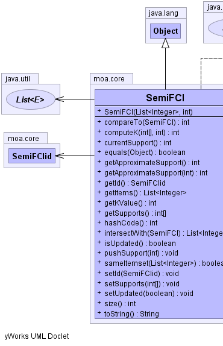
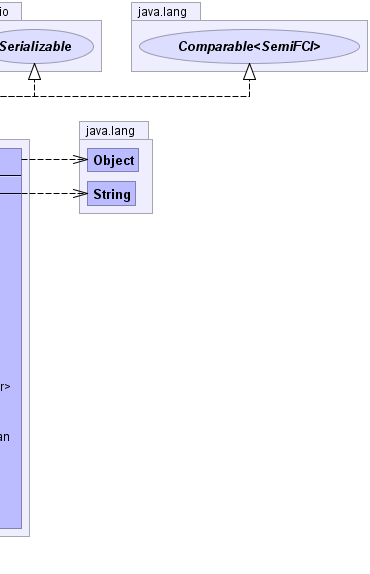

public class SemiFCI extends java.lang.Object implements java.lang.Comparable<SemiFCI>, java.io.Serializable
|  |  |
| Constructor and Description |
|---|
SemiFCI(java.util.List<java.lang.Integer> itemset,
int currentSupport)
Default constructor.
|
| Modifier and Type | Method and Description |
|---|---|
int |
compareTo(SemiFCI o) |
int |
computeK(int[] supVector,
int k1)
Compute the maximum k having support greater than the corresponding in the
minimum support vector
|
int |
currentSupport()
Returns the current support of the semiFCI.
|
boolean |
equals(java.lang.Object obj) |
int |
getApproximateSupport()
Computes the approximate support over the entire sliding window
|
int |
getApproximateSupport(int k)
Computes the approximate support over a window of dimension k starting from
the current segment.
|
SemiFCIid |
getId() |
java.util.List<java.lang.Integer> |
getItems()
Returns the itemset of this semiFCI
|
int |
getKValue()
The current value of k for k-SemiFCI
|
int[] |
getSupports() |
int |
hashCode() |
java.util.List<java.lang.Integer> |
intersectWith(SemiFCI o)
Returns the intersection of the itemsets of the current semiFCI and the passed one
|
boolean |
isUpdated() |
void |
pushSupport(int supValue)
Push a support value in the head of the support vector
|
boolean |
sameItemset(java.util.List<java.lang.Integer> itemset)
Compares the current itemset with the passed one
|
void |
setId(SemiFCIid id) |
void |
setSupports(int[] supports) |
void |
setUpdated(boolean updated) |
int |
size() |
java.lang.String |
toString() |
public SemiFCI(java.util.List<java.lang.Integer> itemset,
int currentSupport)
item - itemset of the semiFCIcurrentSupport - current supportpublic java.util.List<java.lang.Integer> getItems()
public int getKValue()
public int size()
public int compareTo(SemiFCI o)
compareTo in interface java.lang.Comparable<SemiFCI>public boolean equals(java.lang.Object obj)
equals in class java.lang.Objectpublic int hashCode()
hashCode in class java.lang.Objectpublic java.util.List<java.lang.Integer> intersectWith(SemiFCI o)
o - passed SemiFCIpublic boolean sameItemset(java.util.List<java.lang.Integer> itemset)
itemset - itemset to comparepublic boolean isUpdated()
public void setUpdated(boolean updated)
updated - the updated to setpublic int[] getSupports()
public void setSupports(int[] supports)
supports - the supports to setpublic SemiFCIid getId()
public void setId(SemiFCIid id)
id - the id to setpublic int computeK(int[] supVector,
int k1)
supVector - minimum support vectork1 - starting value for kpublic void pushSupport(int supValue)
supValue - value to be pushedpublic int currentSupport()
public int getApproximateSupport()
k - dimension the windowpublic int getApproximateSupport(int k)
k - dimension the windowpublic java.lang.String toString()
toString in class java.lang.Object